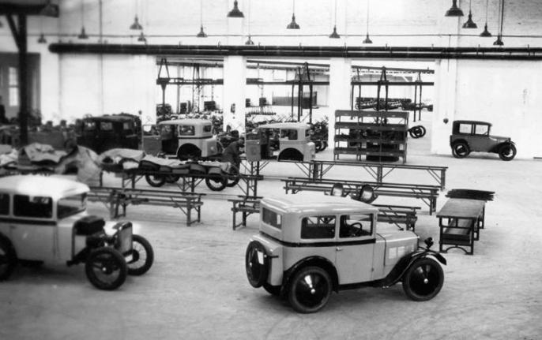

БМВ: история возникновения бренда. Автомобили и мотоциклы
Немецкие автомобили известны своей функциональностью и практичностью во всем мире. Особенно выделяется марка BMW, которая производит не просто технологичные, но и по-настоящему роскошные машины. У нее достаточно интересная и непростая история, которая простирается на промежуток более чем в сто лет. Каждому поклоннику марки будет полезно ее узнать. Путь от производства авиационных моторов к изготовлению высокотехнологичных суперкаров восхищает.
Появление компании Фирма БМВ располагается в Мюнхене.
Здесь находится штаб-квартира, где происходят исследования и ведутся разработки. Начало истории тоже началось именно в этом городе. В 1913 Карл Рапп и Густав Отто открыли две маленькие фирмы с цехами на северных окраинах Мюнхена. Они специализировались на производстве авиамоторов. Маленькое предприятие плохо подходит для конкуренции на рынке, поэтому вскоре фирмы были объединены. Название для нового производства звучало как Bayerische Flugzeug-Werke, что означает «Баварские авиационные заводы». Основатель БМВ - Густав Отто - был сыном изобретателя двигателя внутреннего сгорания, да и Рапп знал толк в деле, поэтому предприятие обещало быть успешным.

Изменение концепции
В сентябре 1917 года была придумана легендарная бело-голубая эмблема круглой формы, до сих пор используемая БМВ. История создания отсылает к самолетному прошлому: рисунок символизирует самолетный винт, изображенный на фоне небесной синевы. Кроме того, белый и голубой являются традиционными цветами Баварии. Как уже упоминалось ранее, изначально концерн был создан для производства авиационных двигателей, не существовало даже современного названия БМВ. История марки пошла по другому пути после Первой мировой. По Версальскому договору, Германия не могла заниматься производством самолетов, и основателям пришлось перепрофилировать производство. Тогда бренд и получил новое название. Вместо авиации в центре появилось слово Motorische, ознаменовавшее начало производства техники другого типа. Под этим названием поклонники знают фирму и по сей день.